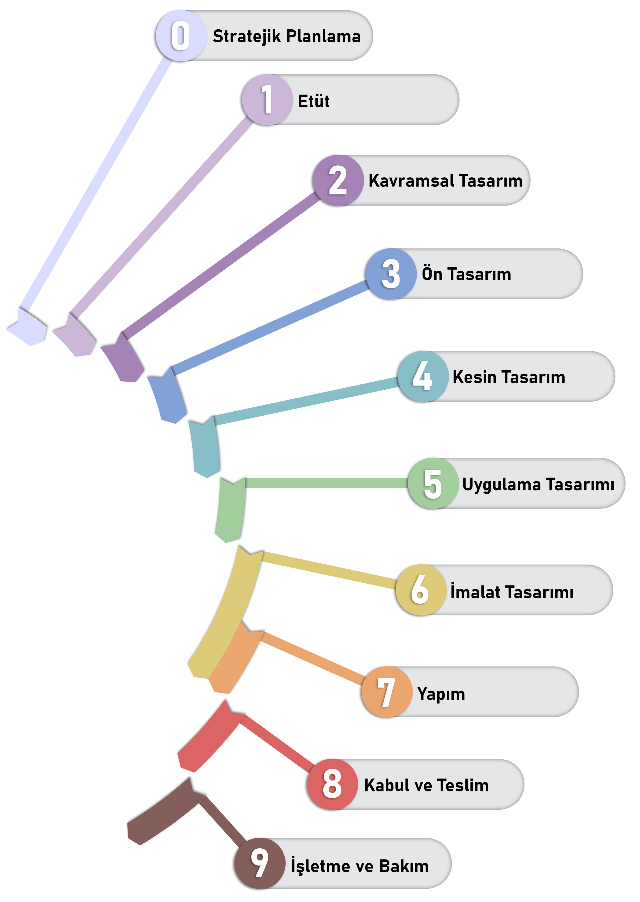

Yapı Geliştirme Aşamaları
Ülkemizde yürürlükte olan, farklı disiplinler için ayrı ayrı hazırlanan tasarım hizmetlerine esas asgari ücret yönetmelikleri, en az bedel tarifsinde yapı geliştirme aşama tariflerinin birbirleri ile ilişkilendirilememesi ve benzer aşama isimlerinin altında disiplinlerden beklentilerin farklı olmasından dolayı, ortak bir anlayış sağlayabilmek amacıyla bu çalışma hazırlanmıştır. Bu çalışma kapsamında yeni veya mevcut üstyapı projelerinin yanı sıra, altyapı projelerine yönelik yapı geliştirme aşamaları da birlikte değerlendirilmiştir. Önerilen yapı geliştirme aşamaları için, disiplinlerin özelinde gerekli detay tanımlamalar, teslim edilmesi gereken dokümanlar ile aralarındaki ilişkilerin ve sorumlulukların netleştirilmesi için ayrı bir “Teslim Gereksinimleri” çalışması yapılmıştır.
İnşaat projelerinde gelişen farklı tedarik stratejileri ve sözleşme tipleri, tasarımın ilerlemesini ve farklı aşamalardaki çalışmaları etkilemeyeceğinden, teknik şartnamelerin, keşif listelerinin, ihale belgelerinin hazırlanması, ihale yapılması ve mobilizasyon vb. süreçler aşamalara dahil edilmemiştir. Proje özelinde tedarik stratejilerine uygun bilgi paylaşım ve teslim süreçleri planlanması önerilmektedir. Aynı zamanda, yerel ve idari yönetimlerin inceleme yapabilecekleri, inşaat ruhsat işlemleri için talep edilen bilgileri içeren çalışmaların en geç Kesin Tasarım aşamasında tamamlanması önerilmektedir.

Çalışmanın ilk aşamasında, “T.C. Bayındırlık Ve İskan Bakanlığı Yapı İşleri Genel Müdürlüğü Mimari Proje Düzenleme Esasları”, “TMMOB Mimarlar Odası Mimarlık Hizmetleri Şartnamesi Ve En Az Bedel Tarifesi”, “TMMOB MMO Serbest Müşavirlik Mühendislik Hizmetleri Ve Asgari Ücret Yönetmeliği”, “TMMOB EMO Elektrik İç Tesisleri Proje Hazırlama Yönetmeliği” ve “RIBA Plan Of Work 2020” dokümanları incelenmiş, çalışmaya katılanların ulusal ve uluslararası tecrübeleri ile değerlendirilerek bir öneri geliştirilmiş ve sektör paydaşlarının görüş ve yorumuna sunulmuştur.
Aşama 0: Stratejik Planlama
İşveren gereksinimlerinin farklı inşaat projesi seçenekleri veya başka yöntemler (inşaat projesi dışında olası seçenekler) ile karşılanması durumlarının tümünün avantaj ve dezavantajları ile irdelendiği, benzer projelerdeki geçmiş deneyimleri de dikkate alarak proje risk ve bütçesinin değerlendirildiği, en uygun çözüm ile yatırım vizyonunun tespit edildiği aşamadır. Bu aşama aynı zamanda ömrünü tamamlamış yapıların yenilenmesi, yeniden tasarlanması, yıkımı, geri dönüşüm ve atık yönetimi çalışmalarına ait stratejik kararları da içererek, yapı yaşam döngüsünün tamamlanmasını sağlar.
Aşama 1: Etüt
Etüt aşamasında işverenin yatırım vizyonu doğrultusunda ihtiyaçlar ve talepler belirlenip, bunların gerçekleşmesi için standartlara uygun olanaklar ve seçenekler tespit edilecektir. Proje için ihtiyaç programının ve mekânsal kullanım alanlarının tanımlanması, mekân ve işlev şemasının hazırlanması, imar durumu, kadastro, arsanın doğal ve zemin özelliklerinin saptanması, yapının çevre ile ilişkisinin analiz edilmesi çalışmaları yürütülecek, projenin ileriki aşamalarında izlenecek yol ve uygulanacak çalışma yöntemi, sözleşme tipi ve zaman planı kararlaştırılacaktır. Bu aşamada, projenin kaynak kullanım ihtiyacı, sürdürülebilirlik hedefleri ve tesis yönetim stratejisi belirlenir. Diğer paydaşların yapacağı çalışmalar ve bunların koordinasyon ve iletişim şeklinin netleştirilmesi amacı ile öncül hazırlık çalışmaları gerçekleştirilecek; etüt raporu, gerekli çizimler ve görseller hazırlanacak; gerekli idari, hukuki, teknik belgeler derlenecek ve bütçe çalışmaları yapılacaktır.
Aşama 2: Kavramsal Tasarım
Kavramsal Tasarım Aşaması, Etüt Aşaması çalışmalarında onaylanmış bilgilerin tasarıma yansıtılması ile erken evre tasarım önerilerinin oluşturulması amacını taşır. Güncel etüt çalışmalarına, projenin ihtiyaç programına, öngörülen bütçeye, arazi ve iklim verilerine, geoteknik (zemin) özelliklerine, İşveren ve gereksinim durumunda proje paydaşlarının idari ve teknik önerilerine uygun olarak şekillenen kavramsal tasarım için belirlenen içerik, ölçek ve detayda vaziyet planı, planlar, kesitler, görünüşler, görseller ve raporlar hazırlanır. Raporlarda, gerekli sistem seçimleri, işletme fonksiyonlarını sağlayacak teknik tesisat türleri, yapının ihtiyaç duyacağı enerji, su, yakıt vb. kaynakların nereden ve ne şekilde sağlanacağı açıklanır. Bu seçimlerin teknik, ekonomik ve mali gerekçeleri irdelenir.
Aşama 3: Ön Tasarım
Ön Tasarım Aşaması, Kavramsal Tasarım Aşaması çalışmalarında belirlenmiş ve onaylanmış üst düzey kararlar çerçevesinde tasarımın geliştirilmesi, tüm disiplinlerin sistem kararlarını içerecek bilgilerin tasarıma yansıtılması amacını taşır. Projenin mekan ve eleman gerekliliklerini tümüyle kurgulayan temel proje öğeleri olan altyapı, dış saha işleri, kabuk, iç mekânlar, ekipmanlar (cihazlar) , teknik tesisatlar, tefrişat, yapım ve varsa yıkım çalışmaları ile ilgili şematik çizimlerin oluşturulması hedeflenir. Bu aşama sonunda tüm disiplinler tarafından geliştirilen tasarım, maliyet bilgileriyle proje bütçesiyle karşılaştırılması amacıyla kontrol edilecektir. Bu aşamanın sonunda, tasarım ekibinin tüm paydaşlarının kendilerine gerekli olan alanları / mekânları / hacimleri yaklaşık olarak yapı(lar) dahilinde rezerve etmiş olması beklenir. Buna uygun olarak teknik ekipmanların ve tesisatların geçiş yerleri ile yaklaşık ölçüleri; makina ve ekipmanların yaklaşık ağırlıkları, tüketimleri ve yerleşimi belirlenir. Ayrıca tasarım ve hesaplara esas olacak verilerin tespit edildiği, hesap tarzlarının da teklif edildiği çalışmalar yapılır.
Aşama 4: Kesin Tasarım
Kesin tasarım aşamasında, onaylanmış ön tasarıma uygun olarak çalışmalar yürütülür. Daha ayrıntılı ve kesinleşmiş bilgiler üretilir ve çalışmalar gerçekleştirilir. Ön tasarım çalışmaları aşamasından sonra meydana gelen değişiklikleri yansıtmak ya da ön tasarım aşamasında prensipleri belirlenmiş bazı teknik özelliklerin detaylandırılması ve kesinleştirilmesi amacıyla hazırlanır. Disiplinler arası koordinasyonun tamamlanmadığı ancak tüm disiplinler için kendi içerisinde uygulanabilir, gerekli ulusal veya uluslararası yönetmeliklere uygunluğun teyit edildiği ve kesinleşmiş tasarımın hazırlandığı, ekipman ve malzeme bilgilerinin tümüyle tanımlandığı aşamadır.
Aşama 5: Uygulama Tasarımı
Uygulama Tasarımı aşaması, bir önceki aşamada kesinleştirilmiş çalışmalar ile yayınlanan tasarımda, disiplin içi ve disiplinler arası detaylı koordinasyonun tamamlanmasını hedeflemektedir ve geliştirilen tasarımı uygulamaya bağlayan aşamadır. Söz konusu koordinasyon, satın alma bilgileri kesinleşmemiş ancak yapının inşa edilebilmesi için gerekli tüm detayları doğrulamaya esas bilgiler ile yapılacaktır. Yapının inşa edilebilmesi için, yapıda yer alan tüm donatım sistemleri, yapıyı etkileyen bütün elemanları, tipik birleşme şekillerini ve sistem detaylarını, imalatlarla ilgili tüm bilgileri ve referansları ile Yapı Malzemeleri Yönetmeliği’ne, Resmi Gazete’de yayınlanan Uygulama Teknik Şartnameleri’ne ve varsa Uygulama Kural Standartları’na uygunluğunun teyit edildiği, montaj ve yapım özelliklerini içeren; gerekli tüm ölçülerin ve malzemelerin işlendiği, büro ve şantiyede her türlü imalat aşamasında kullanılabilecek nitelikte ve yeterlilikte hazırlanmış çizimler, şartnameler, hesap raporları vb. dokümanların hazırlandığı aşamadır. Yapıda yer alan farklı disiplinlerin sorumluluk sınırlarını belirleyen belgelerdir. Yapının maliyet üst sınırının belirlenmesi amacıyla yapılan metraj ve keşiflerinin esasını teşkil eder.
Aşama 6: İmalat Tasarımı
Bu aşamada, bir önceki aşamada koordine edilmiş tüm disiplinlerin tasarımları, projenin teknik tanımını tamamlamak üzere detaylandırılır ve ayrıca uzman alt yüklenicilerin tasarım çalışmalarıyla sonuçlandırılır. Satın alma bilgilerinin kesinleşmesi ile seçilen malzeme / ürün bilgilerine göre sahada imalatının yapılması öncesinde disiplin içi ve disiplinler arası detaylı koordinasyon tekrar gözden geçirilir. Bu aşama sırasında, yapım aşamasında sahadan kaynaklanan sorunların çözümü hariç, üretime esas çizimlerin seçilen yapım yöntemine uygun ve tedarikçiler ile koordineli bir şekilde oluşturulması ile tasarımın tüm yönleri ile tamamlanmış olması gerekmektedir.
Aşama 7: Yapım
Yapım aşaması, tüm disiplinlere ait imalatların iş programına uygun olarak sahada gerekli mesleki ve kalite kontrol süreçleri denetiminde gerçekleştirilmesini kapsar. İmalat tasarımının tamamlanması sonrasında, projenin sahada gerçekleştirilmesi sürecinde, sahadan kaynaklanan sorunları çözmek veya farklı seçenekleri değerlendirmek amacıyla tasarım üzerinde güncellemeler yapılabilir. Birçok projede İmalat Tasarımı Aşaması ile Yapım Aşaması eş zamanlı olarak gerçekleşebilir, bu sebeple kademeli olarak tamamlanan İmalat Tasarımı ile ilgili sahada imalatlar gerçekleştirilir. Bu aşamada, imalat ve montajı tamamlanarak işletmeye alınma aşamasına gelmiş olan yapının tamamlanmış, gerçekleşen durumunu gösteren “Kayıt Belgeleri’’ hazırlanır, güncel tutulur ve kurulumu gerçekleşen varlıklar ile ilgili bilgiler ileriki aşamalar için kaydedilir.
Aşama 8: Kabul-Teslim
Projenin sözleşme dahilindeki yönetmelik, standart, şartname ile çizimlerine ve genel olarak bilinen fen ve sanat kurallarına uygun yapılıp yapılmadığının tespitinin gerekli test, ayar ve dengeleme ölçüm ve doğrulama yöntemlerinin de kullanarak yapıldığı hizmete alma aşamasıdır. Tespit edilen eksiklikler tamamlanarak proje tasarımında planlanan işlevleri ile birlikte kullanım veya işletme için devredilir. “Kayıt Belgeleri” ve kurulumu gerçekleşen varlıkla ilgili bilgiler (bakım ve işletme kılavuzları dahil) sonlandırılarak teslim edilir.
Aşama 9: İşletme ve Bakım
Proje tasarım ve inşa bilgilerinden faydalanarak yapının kullanıldığı, işletildiği, bakım ve onarımının yürütüldüğü ve yaşam döngüsünün bir parçası olarak kısmi veya tümüyle yenilendiği, onarıldığı veya tadil edildiği aşamadır. İşveren ve/veya proje ekibi, hizmetlerini iyileştirmek ve yapının kullanım sonrası performans ile memnuniyeti ölçmek üzere “Kullanım Sonrası Değerlendirme” gerçekleştirilebilir. Bu aşamada, yenileme, revizyon vb. çalışmalar, yeni proje niteliği ile ihtiyaç duyulan aşamalardan geçmeli ve “Kayıt Belgeleri” güncellenmelidir.